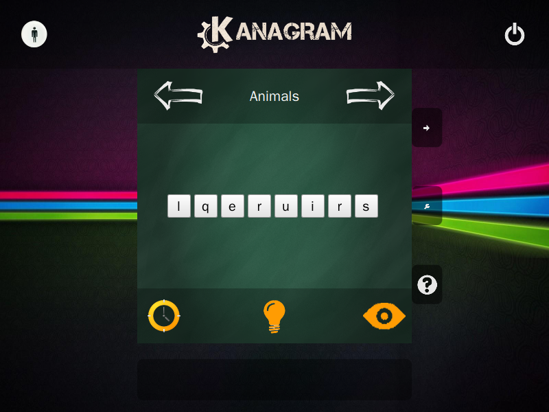
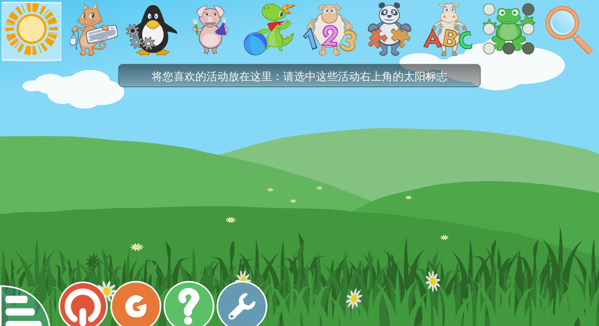
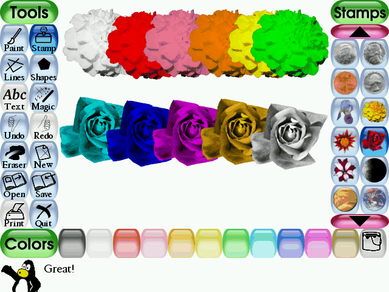
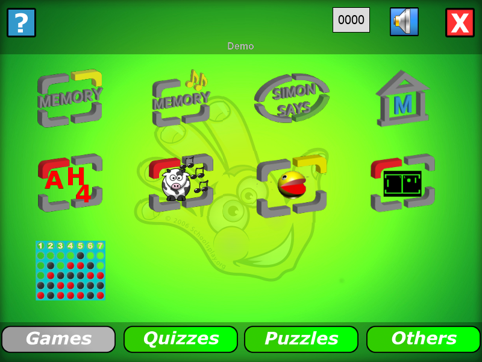
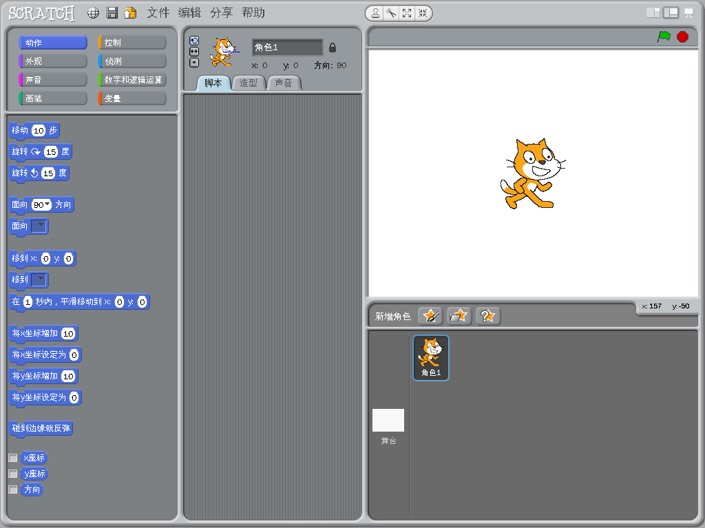
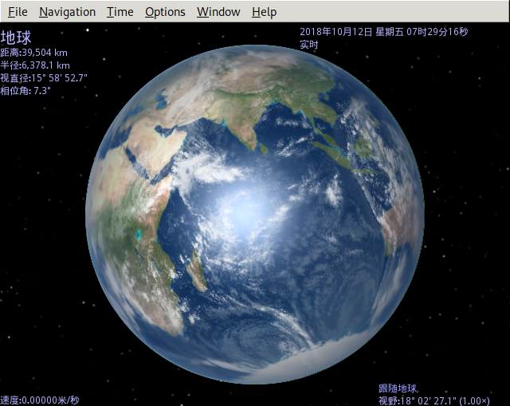
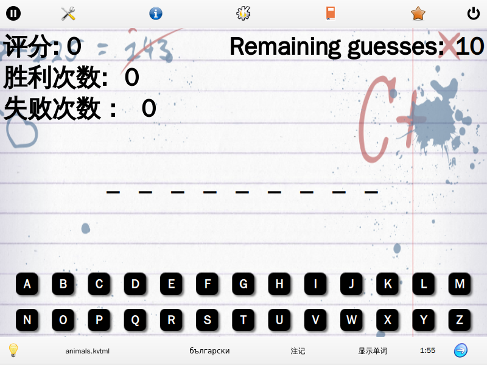
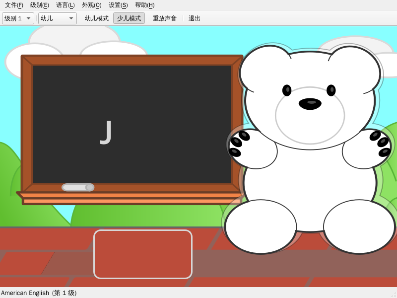
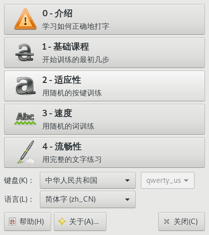

Linux下的那些教育类软件集合
目录
收集一些Linux下的教育类的应用。
发行版
Academix Linux
基于Debian的发行版。搭载的教育软件学科包含了数学，生物学，地理，统计学，图画，音频和视频编辑等方面的内容。 难度从小学到大学均有涉猎。

openSUSE:Education-Li-f-e
软件
Kanagram
- 适用人群
- 小孩
- 作用
- 锻炼单词拼写能力

GCompris
- 适用人群
- 小孩
- 作用
- 绘画、代数、阅读训练、记忆游戏等等超多内容

Tux Paint
- 适用人群
- 小孩
- 作用
- 绘画

ChildsPlay
- 适用人群
- 小孩
- 作用
- 记忆游戏,打字游戏，数学练习，手眼协调能力等

Kstars
- 适用人群
- 小孩
- 作用
- 虚拟的星空

Scratch
- 适用人群
- 小孩
- 作用
- 编程

Celestia
- 适用人群
- 小孩
- 作用
- 3D星空

使用方法
- 旋转视觉
- 按下右键上下左右拖动鼠标
- 缩放大小
- 滚动鼠标滚轮
- 定位到太阳系内指定物体
- 选择 Navigation -> Solar System Browser -> 选择要查看的行星 -> 点击
Go To按钮 - 定位到指定太阳系外物体
- 选择 Navigation -> Star Browser -> 选择要查看的行星 -> 点击
Go To按钮 - 添加其他物体
- 去 Celestia Motherlode website 下载新物体
- 演示脚本
- 从 Celestia Motherlode website 上可以下载到很多
celx文件，这些文件就是脚本文件。 然后点击 File-> Open Script... 打开脚本文件。 - 暂停/开始时间流逝
- 空格键
tuxmath
- 适用人群
- 小孩
- 作用
- 以游戏的方式学数学
blinken
- 适用人群
- 小孩
- 作用
- 记忆游戏
khangman
- 适用人群
- 小孩
- 作用
- 语言学习

kletters
- 适用人群
- 小孩
- 作用
- 语言学习

Klavaro
- 适用人群
- 小孩,成人
- 作用
- 打字练习
